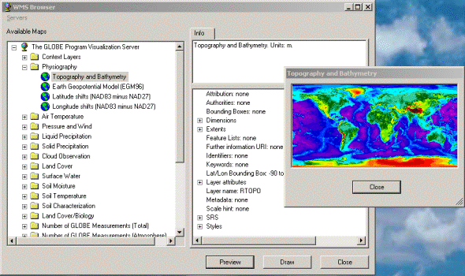
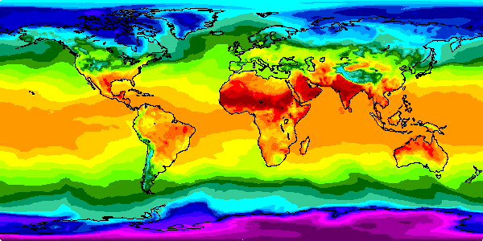
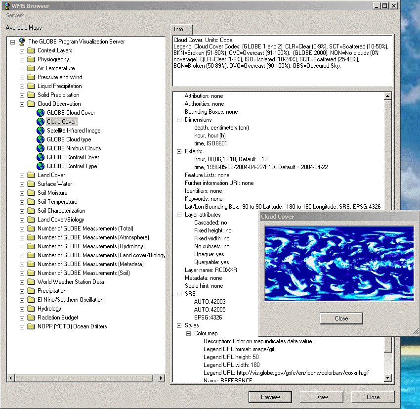

Title: Free Maps from the Web Using Web Mapping Service Author: Tom Gaskins Email: tom@tomgaskins.com Environment: VC#, VS/MSDE 2003, .Net 1.1, WinXP Keywords: Maps, OpenGIS, Data Visualization, Graphics Level: Intermediate Description: Overview of using the OpenGIS Web Mapping Service to retrieve maps from the web. Section General C# Programming SubSection Graphics

This tutorial introduces the Web Mapping Service (WMS) protocol standardized by the OpenGIS Consortium for retrieving geographic maps over the internet. The tutorial provides C# examples of progressively increasing complexity to illustrate use of the protocol and programmatic access from Windows .Net applications. Several utility classes for accessing WMS servers and information are provided and described.
An amazing number of free, interesting, and just plain beautiful geographic maps are available on the web, and they can be easily retrieved programmatically using the Web Mapping Service protocol developed by the OpenGIS consortium (www.opengis.org ). For example, follow the link below to retrieve a world map of today's highest temperatures. Come back here afterwards to learn how it works.
The map you saw in your browser should have looked something like this, which shows the world's maximum temperatures on April 23, 2004:

The URI you just followed is an example of a Web Mapping Service (WMS) GetMap request. Each element of the URI is a defined parameter of the WMS protocol: The base path of the URI identifies the WMS server; the query sting specifies the desired maps and how to represent them. There are additional parameters possible, but the ones above are the required ones.
This article gives an overview of WMS, and it presents C# code to retrieve maps and perform other operations necessary when working with WMS servers and information.
WMS is a web protocol created by the OpenGIS Consortium as a standard way to request and deliver geographic maps and associated information over the web. Data providers and application developers are increasingly adopting WMS. The full WMS specification is available at www.opengis.org/specs/?page=specs. The most commonly implemented version is version 1.1.1, but there are still some servers stuck at version 1.0. The next version, 1.3, (version number 1.2 was skipped) is in development as of April 2004. As standards go, the WMS standard is not hard to read, and it's blessedly short. Give it a look when you're done reading this article. It contains information essential to using WMS, and it's free! A WMS discussion list exists at mail.digitalearth.org/mailman/listinfo/wms-dev . There's a link to a WMS FAQ on that page, too.
A WMS request is an HTTP-GET message sent to a WMS server. The WMS specification defines three request types: GetCapabilities, GetMap, and GetFeatureInfo. You'll find that you use the first two almost exclusively. These two request types are the only ones you need to achieve all the functionality described in this tutorial.
The maximum temperature is one of the many maps available from institutions that receive raw data and process it into geographic information displays. The link two sections above accesses the NASA GLOBE Visualization server (see www.globe.gov ), which provides comprehensive information on the world's environment and is updated daily. This information comes from space-based and land-based instruments, as well as teams of students around the world who collect local data.
How do you determine where to find WMS servers? And how do you learn what maps are available? The last question is the easiest to answer: Every WMS server provides upon request an XML document, called the server's WMS capabilities description, that describes all the maps that server can generate, and all the details and available variations you can request for those maps. The document also identifies the URIs for programmatically accessing the maps. Typically, the capabilities description is updated daily to reflect new data. To see the Capabilities document for the GLOBE server as of April 23, 2004, open this file (GLOBECapabilities20040423.xml) in a browser window, preferably a separate window from this one. You can also follow the link below to get today's version of the document:
http://viz.globe.gov/viz-bin/wmt.cgi?SERVICE=WMS&VERSION=1.1.1&REQUEST=GetCapabilities
But the content returned by the link above won't come back from the server properly typed as XML, so the browser won't recognize it and format it nicely. This typing issue is a problem with the WMS 1.1.1 specification. The specification ridiculously specifies a mime type other than text/xml for the returned XML content, so unaware applications receiving the content treat it as an unknown content type. Your programs can work around this, but web browsers typically don't. The problem is expected be corrected in the WMS 1.3 specification.
The first section of the capabilities description is called the Service section. It gives information about the WMS server itself, including the server's owner and their contact information, any access constraints or fees, and attribution requirements.
The second section of the capabilities description is called the Capability section. It identifies access URIs for the server's WMS features such as GetMap requests. It gives the names and descriptions of all the maps the server provides. The map names are each unique relative to the server, and they are the tokens you use to request a particular map. Other information about maps includes optional textual titles and abstracts, the geographic regions over which a particular map is defined, whether style information such as legends or companion graphics -- logos, etc. -- exist and where to retrieve them from, and lots of other map details and request options. Any optionally implemented WMS capabilities are also indicated in the Capability section. One such capability is the GetFeatureInfo service that returns information about a particular location on a map. (See the WMS specification for a full description and the details of using the GetFeatureInfo request.)
Finding available WMS servers is currently a bit difficult. You pretty much just need to know where they are, or be clever hunting for them. There has been talk about creating an on-line registry of servers, but this hasn't happened yet, and who knows whether it ever will. Here are the URIs of three well-functioning servers that are available as this article is being written and that support WMS version 1.1.1.
The offerings of these servers can be viewed using the WMS Browser example included in the download source of this article.
A web site with links to WMS servers is available at http://sunrise.gsfc.nasa.gov/cgi-bin/viewer.cgi. Some of these servers implement WMS version 1.0, which the examples in this article won't work with. For WMS products and some good demos, visit http://www.cubewerx.com/main.
You won't find the term "map" in a WMS capabilities document or the WMS specification. WMS refers to what most of us would call a map as a "layer." A layer can be an individual map, or it can be a collection of maps, or even a collection of collections of maps. It's really just the name for a node in a map hierarchy. The partially expanded GLOBE server's hierarchy looks like the list below, with collection layers identified by solid bullets, and layers that are individual maps identified by hollow bullets and given in italics:
Each hollow-bullet layer above indicates a map. And while the collection layers could contain additional collections of collection layers, they don't on this particular server.
Typically, only layers at the leaves of a layer hierarchy can be requested (to be returned as maps). Their parent layers serve mainly to group them logically. However, a server may allow some of these grouping layers to be requested in a single GetMap request, in which case the server returns a single map that combines all layers within that group. This will yield one map with probably a lot of information on it, but the server is likely to allow this capability only if the layers make sense when displayed as a unit. The key to whether a layer is requestable is the layer name field in the capabilities description. All layers have a name field, but only layers you can actually request have a name specified in that field. The field is typically empty for grouping layers. So the rule is, if the capabilities description gives a non-empty name for a layer, you can request that layer in a GetMap request, regardless of whether that layer has sub-layers or not. If a layer has no name, it can't be requested.
The GetMap request is the only way to request a layer. The request is a simple http-get request that contains a base path identifying the server and a query string identifying the desired map and any optional parameters. The most essential part of the query string is the layer name. Other parameters of the query string are the desired graphics format (GIF, JPEG, PNG, etc.), the size in pixels of the map image to return, any specific time or elevation for which to generate the map, and the geographic coordinate system or projection to use when creating the map. You can find the full list of required and optional parameters in the WMS spec.
Here again is the GetMap URI from above:
The URI components prior to the query string (everything before the question mark) identifies the WMS server and the destination of the GetMap request. This info is given in the server's capabilities description, in its Capability section. The query string (everything after the question mark) identifies the parameters describing the map we want, in the form of attribute-value pairs separated by ampersands.
The above URI requests two layers: "COASTLINES" and "RATMAX." These layer names were taken from the server's capabilities description. Since we're requesting two layers, the WMS server will compose those layers into a single map and return that map to us. This is an important point to understand: GetMap always returns one map, regardless of how many layers we ask for. The URI above asks for the returned map to be in GIF format. The formats a server can generate are given in its capabilities description, but most servers can create GIF and JPEG maps. The request asks for a map image 600 pixels wide and 300 pixels high. The map should cover the full longitude and latitude of the Earth, -180 degrees longitude and -90 degrees latitude to +180 degrees longitude and +90 degrees latitude, with those values specified in the EPSG:4326 spatial reference system (SRS), which is the common latitude/longitude system familiar to all of us. (EPSG is the organization that defines such things as Earth coordinate systems.) One more piece of required information is the "STYLES" we'd like. In this case we specify an empty value, "STYLES=,&", to get the default style. I don't cover styles in this article, but you can look in the WMS specification and the GLOBE server's capabilities description to get a sense of what they are.
All the above information is the minimum required to request a map. You'll notice that the URI also contains values for "SERVICE" and "VERSION", as well as the request name, "REQUEST= GetMap". All these parameters are required. The value for the VERSION parameter must be one the server supports, which you can determine by using the sever negotiation procedure described in the WMS specification. In practice you can most likely get away with just asking for version 1.1.1 until the 1.3 specification comes out. When that happens we'll all have to get more professional about version negotiation.
So far we've just been using in-line URIs to get maps and the server's capabilities. But I'm hoping that you're noticing how easy it would be to form and invoke those URIs from a program, one written in just about any language. (Does FORTRAN know about the web yet?)
But how do you get the capabilities description programmatically? The example
below shows a simple way. It explicitly builds the GetCapabilities URI, using
.Net's System.UriBuilder class, then uses .Net's System.Net.WebRequest
and System.Net.WebResponse classes to request and retrieve the XML
capabilities description. In this example the description is simply copied to a
local text file with a .xml file extension, then the program invokes Internet
Explorer to display it. The program is in the accompanying project code; give
it a try. You have to be connected to the internet for it to work successfully,
of course.
namespace Wms.Client
{
class GetCapabilitesExample
{
[System.STAThread]
static void Main(string[] args)
{
System.UriBuilder uri = new System.UriBuilder(@"http://viz.globe.gov/viz-bin/wmt.cgi");
uri.Query = "SERVICE=WMS&REQUEST=GetCapabilities";
System.Net.WebRequest wr = System.Net.WebRequest.Create(uri.Uri);
System.Net.WebResponse response = wr.GetResponse();
System.IO.StreamReader sr = new System.IO.StreamReader(response.GetResponseStream());
string fileName = System.IO.Path.GetTempPath() + @"capabilities.xml";
System.IO.StreamWriter sw = System.IO.File.CreateText(fileName);
sw.Write(sr.ReadToEnd());
sr.Close();
sw.Close();
invokeIe(fileName);
}
static private void invokeIe(string uri)
{
System.Diagnostics.Process ie = new System.Diagnostics.Process();
ie.StartInfo.FileName = "iexplore.exe";
ie.StartInfo.Arguments = uri;
ie.Start();
}
}
}
Now let's get a map. The example below creates and sends a WMS GetMap request
and displays the returned results in Internet Explorer. The GetMap request is
formed using a Wms.Client.WmsRequestBuilder class that I created
to make it easy to build WMS requests. This class is in the accompanying
download project. It provides set and get accessors for the WMS request
parameters, and includes a get accessor to retrieve the correctly formed WMS
URI.
Although WMS is an XML-based specification, the returned value from a GetMap request is a graphics image, not XML. (The exception is if the request asks for some XML-based graphics format, such as GML or SVG). You encounter XML only in capabilities descriptions, in exception messages returned from GetMap and other WMS requests, and in the information returned by the GetFeatureInfo request.
To handle WMS capabilities descriptions easily, at least in C#, I've created a
Capabilities class in a namespace Wms.Client. An
instance of this class parses the XML capabilities description (using .Net's System.Xml.XPath
classes), and provides granular, type-safe accessors to its contents. For
example, to read the URI for sending GetMap requests, a program accesses the
property Wms.Client.Capabilities.GetMapUriCapabilities class is included in the
accompanying source code.
The following example pulls the GetMap request destination from the server's
capabilities description, but merely uses two hard-coded layer names that I
know work. (We'll get more useful than this later in the article.) It also uses
another class, Wms.Client.Server, that I created to encapsulate a
WMS server and its capabilities description.
namespace Wms.Client
{
class GetMapExample
{
[System.STAThread]
static void Main(string[] args)
{
// Create a request to get the capabilities document from the server.
System.UriBuilder serverUri =
new System.UriBuilder(@"http://viz.globe.gov/viz-bin/wmt.cgi");
Wms.Client.CapabilitiesRequestBuilder capsRequest =
new Wms.Client.CapabilitiesRequestBuilder(serverUri.Uri);
// Retrieve the capabilities document and cache it locally.
System.Net.WebRequest wr = System.Net.WebRequest.Create(capsRequest.Uri);
System.Net.WebResponse response = wr.GetResponse();
string fileName = System.IO.Path.GetTempPath() + @"capabilities.xml";
copyStreamToFile(response.GetResponseStream(), fileName);
// Parse the capabilities document and create a capabilities object
// for reading the parsed information. This is done by creating a Server
// object to represent the server associated with the capabilities.
Wms.Client.Server server = new Wms.Client.Server(fileName);
Wms.Client.Capabilities caps = server.Capabilities;
// Create a GetMap request using the MapRequestBuilder class. When
// creating the request, use the URI given in the server's capabilities
// document. This URI may be different than the one used to get the
// capabilities document.
Wms.Client.MapRequestBuilder mapRequest =
new Wms.Client.MapRequestBuilder(new System.Uri(caps.GetMapRequestUri));
mapRequest.Layers = "COASTLINES,RATMIN";
mapRequest.Styles = ","; // use default style for each layer
mapRequest.Format = "image/gif";
mapRequest.Srs = "EPSG:4326";
mapRequest.BoundingBox = "-180.0,-90.0,180.0,90.0";
mapRequest.Height = 300;
mapRequest.Width = 600;
mapRequest.Transparent = false;
// Retrieve the map and cache it locally.
System.Net.WebRequest mwr = System.Net.WebRequest.Create(mapRequest.Uri);
System.Net.WebResponse mresponse = mwr.GetResponse();
string mapFileName = System.IO.Path.GetTempPath() + @"wmsmap.gif";
copyStreamToFile(mresponse.GetResponseStream(), mapFileName);
// Use Internet Explorer to display the map.
invokeIe(mapFileName);
}
private static void copyStreamToFile(System.IO.Stream stream, string destination)
{
using (System.IO.BufferedStream bs = new System.IO.BufferedStream(stream))
{
using (System.IO.FileStream os = System.IO.File.OpenWrite(destination))
{
byte[] buffer = new byte[2 * 4096];
int nBytes;
while ((nBytes = bs.Read(buffer, 0, buffer.Length)) > 0)
{
os.Write(buffer, 0, nBytes);
}
}
}
}
static private void invokeIe(string uri)
{
System.Diagnostics.Process ie = new System.Diagnostics.Process();
ie.StartInfo.FileName = "iexplore.exe";
ie.StartInfo.Arguments = uri;
ie.Start();
}
}
}
All the examples in this article save the retrieved information, either a capabilities description or a map, to a local file, and then operate on that local file rather than the stream returned from the WMS server. This may seem like an unnecessary step, and indeed it is if you don't want to cache the retrieved information. But every useful WMS program I've written wants to keep the retrieved information around so that it doesn't have to request it again if the user wants to use it again. This is especially true of maps, which can take considerable time to retrieve and which can cause the WMS server a lot of work to create. Because I suspect that you'll want to cache things, I make a point in the examples of retrieving to a file. Feel free to do otherwise in your programs.
As I describe below in the section Description of the Accompanying Code,
the Wms.Client project in the accompanying download code contains
a class that manages a persistent file cache for WMS maps. The cache is
user-specific and persists across invocations of WMS programs that use it.
Again, the need for this came from my experience that most programs using WMS
will want to cache maps to avoid subsequent retrieval overhead.
Caching WMS capabilities descriptions is a different story, however. I usually do not cache those because they often change on the server from day to day. For instance, if I cached the capabilities description from the GLOBE server today, then when I used that cached description tomorrow it would not include the many maps that server generated overnight. For that reason I almost always retrieve a new version of the capabilities description when a program starts. The exception is when I want the program to run even when the computer is not connected to the internet. In that case I will cache the capabilities description each time I retrieve it, and then use the cached version if the computer is not connected to the internet when the program is subsequently run. Of course, the program still won't be able to access the WMS server and its maps if it's not connected to the internet, so only maps that were also cached will be available.
Normally we don't want to retrieve maps -- or even capabilities descriptions --
synchronously like we did in the above examples. The example below demonstrates
using two classes I created for asynchronous retrieval, Wms.Client.CapabilitiesRetriever
and Wms.Client.MapRetriever. We pass to an instance of these
classes a Wms.Client.WmsRequestBuilder object and an event handler
(a C# delegate) to be called when the request completes. We can also specify to
the retriever a progress event handler that is called at intervals to indicate
retrieval progress. It's in this event handler that the below example
incorporates progress feedback to the user. In the example, the progress event
handler simply adds characters to a text string in a status bar at the bottom
of the map window.
This is the first example in this article that uses Windows Forms to display the
map. The main form contains a Picture Box (System.Windows.Forms.PictureBox)
to which we pass an Image (System.Drawing.Image) object that was
created from the map file that was saved locally by the map retriever.
The example is also the first to do some rudimentary error handling. WMS servers
return WMS exceptions if something goes wrong in the WMS components of the
server. These exceptions are returned as XML documents, but with a content type
of application/vnd.ogc.se_xml. (This is another instance of WMS'
misuse of content type, and it's expected to be fixed in the next version of
the specification.) The example below merely checks for this content type (and
a variant that is erroneously returned by some WMS servers) and does not parse
the exception document. Not that parsing the exception document is difficult,
it's just more than I want to capture in this example. The download code
accompanying this article contains a class that converts WMS XML exceptions to
.Net exceptions. See the Description of the Accompanying Code section
below for a description of it.
Notice that the Retriever objects use Request objects to figure out what to
retrieve. The retrievers will not start -- an exception will be thrown -- if
its Request field is not set prior to calling the Retriever's Start
method. For more information about this see the Description of the Accompanying
Code section below, and the Retriever code itself.
using System;
using System.Drawing;
using System.Collections;
using System.ComponentModel;
using System.Windows.Forms;
using System.Data;
namespace Wms.Client
{
///
/// Retrieve WMS capabilities and maps asynchronously.
///
public class GetMapAsynchExample : System.Windows.Forms.Form
{
private System.Windows.Forms.PictureBox pictureBox;
private System.Windows.Forms.StatusBar statusBar;
private System.ComponentModel.Container components = null;
public GetMapAsynchExample()
{
InitializeComponent();
}
protected override void Dispose( bool disposing )
{
if( disposing )
{
if (components != null)
{
components.Dispose();
}
}
base.Dispose( disposing );
}
#region Windows Form Designer generated code
///
/// Required method for Designer support - do not modify
/// the contents of this method with the code editor.
///
private void InitializeComponent()
{
this.pictureBox = new System.Windows.Forms.PictureBox();
this.statusBar = new System.Windows.Forms.StatusBar();
this.SuspendLayout();
//
// pictureBox
//
this.pictureBox.BorderStyle = System.Windows.Forms.BorderStyle.Fixed3D;
this.pictureBox.Location = new System.Drawing.Point(8, 8);
this.pictureBox.Name = "pictureBox";
this.pictureBox.Size = new System.Drawing.Size(600, 300);
this.pictureBox.TabIndex = 0;
this.pictureBox.TabStop = false;
//
// statusBar
//
this.statusBar.Location = new System.Drawing.Point(0, 319);
this.statusBar.Name = "statusBar";
this.statusBar.Size = new System.Drawing.Size(616, 22);
this.statusBar.TabIndex = 1;
//
// GetMapAsynchExample
//
this.AutoScaleBaseSize = new System.Drawing.Size(5, 13);
this.ClientSize = new System.Drawing.Size(616, 341);
this.Controls.Add(this.statusBar);
this.Controls.Add(this.pictureBox);
this.Name = "GetMapAsynchExample";
this.Text = "Get Map Asynch Example";
this.ResumeLayout(false);
}
#endregion
static void Main()
{
GetMapAsynchExample form = new GetMapAsynchExample();
form.statusBar.Text = "Retrieving Capabilities ";
// Create and initialize a retriever to retrieve WMS capabilities.
Wms.Client.CapabilitiesRetriever capsRetriever = new Wms.Client.CapabilitiesRetriever(form);
capsRetriever.ProgressInterval = new System.TimeSpan(0,0,0,0,500);
capsRetriever.Done += new Wms.Client.RetrieverDoneEventHandler(form.capsRetrieveDone);
capsRetriever.Progress += new Wms.Client.RetrieverProgressEventHandler(form.showCapsProgress);
capsRetriever.Request = new Wms.Client.CapabilitiesRequestBuilder(
new System.Uri(@"http://viz.globe.gov/viz-bin/wmt.cgi"));
capsRetriever.Destination = System.IO.Path.GetTempFileName();
// Once the retriever is initialized, tell it to start the retrieval.
capsRetriever.Start();
Application.Run(form);
}
private void showCapsProgress(System.Object sender, Wms.Client.RetrieverProgressArgs ea)
{
// Update the progress bar.
this.statusBar.Text += "+";
}
private void capsRetrieveDone(object sender, Wms.Client.RetrieverDoneArgs ea)
{
// This event handler is called when the capabilities description has
// been retrieved from the WMS server and parsed on the client side.
if (ea.Reason == Wms.Client.RetrieverDoneArgs.CompletionReason.Completed)
{
if (ea.ContentType.Equals("application/vnd.ogc.wms_xml")
|| ea.ContentType.Equals("text/xml"))
{
// Capabilities successfully retrieved from server.
initiateMapRequest(ea.DestinationObject as Wms.Client.Server);
}
else if (ea.ContentType.Equals("application/vnd.ogc.se_xml")
|| ea.ContentType.Equals("application/vnd.ogc.se+xml"))
{
// WMS servers indicate WMS exceptions using the above content types.
string msg = "The WMS server returned an exception."
+ System.Environment.NewLine;
System.Windows.Forms.MessageBox.Show(msg, "WMS Server Exception",
System.Windows.Forms.MessageBoxButtons.OK, System.Windows.Forms.MessageBoxIcon.Error);
}
else
{
// If the content type is something unexpected, then it's likely that we
// reached an HTML page, which can be displayed in Internet Explorer.
string msg = "The WMS server returned an incorrect format of "
+ ea.ContentType + "." + System.Environment.NewLine
+ "This is not a valid format." + System.Environment.NewLine
+ "Would you like to see if Internet Explorer can show you what was returned?";
System.Windows.Forms.DialogResult yesNo = System.Windows.Forms.MessageBox.Show(msg, "Invalid WMS Format",
System.Windows.Forms.MessageBoxButtons.YesNo, System.Windows.Forms.MessageBoxIcon.Error);
if (yesNo == System.Windows.Forms.DialogResult.Yes)
{
invokeIe(ea.Retriever.Request.ToString());
}
}
}
else if (ea.Reason == Wms.Client.RetrieverDoneArgs.CompletionReason.TimedOut)
{
string msg = "Contacting WMS server timed out."
+ System.Environment.NewLine;
System.Windows.Forms.MessageBox.Show(msg, "WMS Server Contact Timed Out",
System.Windows.Forms.MessageBoxButtons.OK, System.Windows.Forms.MessageBoxIcon.Error);
}
else // there was an error that we could not predict, most likely an http error.
{
string msg = "Error contacting WMS server: " + ea.Message
+ System.Environment.NewLine;
System.Windows.Forms.MessageBox.Show(msg, "Unable to contact WMS server",
System.Windows.Forms.MessageBoxButtons.OK, System.Windows.Forms.MessageBoxIcon.Error);
}
}
private void initiateMapRequest(Wms.Client.Server server)
{
this.statusBar.Text = "Retrieving Map ";
// Create a GetMap request for the layers COASTLINES and RATMIN (min temperatures).
Wms.Client.MapRequestBuilder mapRequest = new Wms.Client.MapRequestBuilder(
new System.Uri(server.Capabilities.GetCapabilitiesRequestUri));
mapRequest.Layers = "COASTLINES,RATMIN";
mapRequest.Styles = ","; // use default style for each layer
mapRequest.Format = "image/gif";
mapRequest.Srs = "EPSG:4326";
mapRequest.BoundingBox = "-180.0,-90.0,180.0,90.0";
mapRequest.Height = 300;
mapRequest.Width = 600;
mapRequest.Transparent = false;
// Create a retriever to execute the request.
Wms.Client.MapRetriever mapRetriever = new Wms.Client.MapRetriever(this);
mapRetriever.ProgressInterval = new System.TimeSpan(0,0,0,0,500);
mapRetriever.Done += new Wms.Client.RetrieverDoneEventHandler(this.mapRetrieveDone);
mapRetriever.Progress += new Wms.Client.RetrieverProgressEventHandler(this.showMapProgress);
mapRetriever.Request = mapRequest;
mapRetriever.Destination = System.IO.Path.GetTempFileName();
// Start the retrieval.
mapRetriever.Start();
}
private void showMapProgress(System.Object sender, Wms.Client.RetrieverProgressArgs ea)
{
// Update the progress bar.
this.statusBar.Text += "+";
}
private void mapRetrieveDone(object sender, Wms.Client.RetrieverDoneArgs ea)
{
// This event handler is called when the map has been retrieved, or when an error
// occurs in the retrieval.
Wms.Client.MapRequestBuilder mapRequest = ea.Retriever.Request as Wms.Client.MapRequestBuilder;
if (ea.Reason == Wms.Client.RetrieverDoneArgs.CompletionReason.Completed)
{
if (ea.ContentType.Equals("application/vnd.ogc.se_xml")
|| ea.ContentType.Equals("application/vnd.ogc.se+xml")
|| ea.ContentType.Equals("text/xml"))
{
string msg = "Retrieval of map returned an error:" + System.Environment.NewLine;
System.Windows.Forms.MessageBox.Show(msg, "WMS Server Exception",
System.Windows.Forms.MessageBoxButtons.OK, System.Windows.Forms.MessageBoxIcon.Error);
}
else
{
System.Drawing.Image image = System.Drawing.Image.FromFile(ea.DestinationFile);
this.pictureBox.Image = image;
this.statusBar.Text = System.String.Empty;
}
}
else if (ea.Reason == Wms.Client.RetrieverDoneArgs.CompletionReason.Error)
{
System.Windows.Forms.MessageBox.Show("Error retrieving map: " + ea.Message,
"Retrieval error",
System.Windows.Forms.MessageBoxButtons.OK, System.Windows.Forms.MessageBoxIcon.Error);
}
else if (ea.Reason == RetrieverDoneArgs.CompletionReason.TimedOut)
{
System.Windows.Forms.MessageBox.Show("Retrieval of map timed out.",
"Retrieval error",
System.Windows.Forms.MessageBoxButtons.OK, System.Windows.Forms.MessageBoxIcon.Error);
}
}
static private void invokeIe(string uri)
{
System.Diagnostics.Process ie = new System.Diagnostics.Process();
ie.StartInfo.FileName = "iexplore.exe";
ie.StartInfo.Arguments = uri;
ie.Start();
}
}
}
Now let's get closer to something more generally useful. The figure below shows a dialog box that lists, on the left, a WMS servers and its layers. (The code for this example is included in the accompanying download project.) The layers are presented in the dialog in the hierarchy defined by the server. On the right is the WMS information about the server or about the layer, depending on which item in the left panel is selected. This information is that within the WMS capabilities description retrieved from the server. In the figure, the "Cloud Cover" layer of the GLOBE Program Visualization Server is selected. It's a named layer -- "RCOXXR" -- so we can request a map for it. A small version of that map is shown in the preview pane that partially covers the right panel. Notice in the right panel that there is a lot of map information that I haven't even mentioned.

The version of this program in the download code contains three WMS servers in the left panel: The GLOBE Visualization Server, the Web Map Server at JPL, and the Cascading Map Server at CubeWerx, Inc. These servers, especially the GLOBE and CubeWerx servers, hold a wonderful collection of maps. You can use the sample program to take a look at them.
Take a look at the "Extents" item in the right panel of the figure above. That item is about a third of the way down from the top. The extents field of a WMS layer gives the date, time, or elevation values for which the layer can be presented -- for which a map can be generated. One of the extents displayed above is:
time, 1996-05-02/2004-04-22/P1D, Default = 2004-04-22
This indicates that cloud cover maps can be created for any day between and including May 2, 1996 and April 22, 2004 (today, as I'm writing this). The "P1D" term denotes that the capture period of the data is every one day. We can specify the day we want a map for by including an EXTENTS parameter in a GetMap request for this layer. Isn't that cool! More cool is that we can create several GetMap requests for a sequence of days, retrieve those maps, and use them to display an animation, in this case changes in cloud cover. The accompanying project contains a simple program that does just that. It display the world's cloud cover for the first ten days of May 2004. The example is listed and described below, in the section entitled Animating Maps.
If I issue a GetMap request for this layer and do not specify a date, I'll get back the map for the default time, which is April 22, 2004 as shown in the above excerpt. On this WMS server, the default changes every day because the server is updated with new data every night. In fact, many of the layers on this server are updated nightly.
The name of the field "Extents" is a bit misleading. On first sight my guess would be that it has something to do with the geographic map extents available. But no, that information is available in the "Bounding Boxes" field.
We're all familiar with the animated weather maps seen on television newscasts. These are easy to create using WMS: Simply retrieve a collection of maps and post them to the display successively. The following example does this, and as you can see it's only a modified version of the previous example that asynchronously retrieves one map. This new example initiates retrieval of ten maps, each representing a day's cloud cover composed with a map of the world's coastlines. Once all the maps are retrieved, the example displays them successively to show cloud movement. In order to reduce clutter in the example, I've removed all the error handling code as well as the code Visual Studio generated. The error handling code would be identical to that in the previous example, and you can see the full program in the download code.
Things to note in this example are that a new Wms.Client.MapRetriever
object is created for each map to retrieve. Also, there is no progress handler
for these retrievers; progress is monitored and displayed via a Windows Forms
Timer object. The timer-tick event handler of this timer determines when all
the maps have been retrieved, and then continually posts them successively to
the display until the program exits.
You can produce these animations for any WMS layers that specify in their
server's capabilities description that they have extents. Typically the extents
are time, such as the dates available, and you ask for each map within the
specified extents by specifying the desired time in the Time parameter of the
GetMap request. In the example below, notice that mapRequest.Time is
set with a string indicating the date of the map we want. Ten successive days
are specified, from May 1, 2004 to May 10, 2004. Many maps also have elevation
extents. You request any of the available elevations by using the Elevation
parameter of the GetMap request. The Time and Elevation parameters are
independent, so if the layer has both types of extents defined, you can ask for
a map for a particular time and a particular elevation. Other extent types are
possible, but the WMS specification doesn't specifically call them out, and the
method of requesting them is more complex. See the WMS specification if you're
interested in this.
using System;
using System.Drawing;
using System.Collections;
using System.ComponentModel;
using System.Windows.Forms;
using System.Data;
namespace Wms.Client
{
///
/// Animate a collection of maps retrieved from a WMS server.
///
public class MapAnimationExample : System.Windows.Forms.Form
{
private System.Windows.Forms.PictureBox pictureBox;
private System.Windows.Forms.StatusBar statusBar;
private System.ComponentModel.IContainer components;
private System.Windows.Forms.Timer timer;
private System.Windows.Forms.ProgressBar progressBar;
private Wms.Client.MapRequestBuilder [] mapRequests;
private System.Drawing.Image [] mapImages;
public MapAnimationExample()
{
InitializeComponent();
// Create arrays to hold the map requests and the retrieved images.
this.mapRequests = new Wms.Client.MapRequestBuilder[10];
this.mapImages = new System.Drawing.Image[10];
// Initialize the progress bar.
this.progressBar.Minimum = 0;
this.progressBar.Maximum = this.mapImages.Length;
}
#region Windows Form Designer generated code
static void Main()
{
MapAnimationExample form = new MapAnimationExample();
form.statusBar.Text = "Retrieving Capabilities ";
// Create and initialize a retriever to retrieve WMS capabilities.
Wms.Client.CapabilitiesRetriever capsRetriever = new Wms.Client.CapabilitiesRetriever(form);
capsRetriever.ProgressInterval = new System.TimeSpan(0,0,0,0,500);
capsRetriever.Done += new Wms.Client.RetrieverDoneEventHandler(form.capsRetrieveDone);
capsRetriever.Progress += new Wms.Client.RetrieverProgressEventHandler(form.showCapsProgress);
capsRetriever.Request = new Wms.Client.CapabilitiesRequestBuilder(
new System.Uri(@"http://viz.globe.gov/viz-bin/wmt.cgi"));
capsRetriever.Destination = System.IO.Path.GetTempFileName();
// Once the retriever is initialized, tell it to start the retrieval.
capsRetriever.Start();
Application.Run(form);
}
private void showCapsProgress(System.Object sender, Wms.Client.RetrieverProgressArgs ea)
{
// Increment the capabilities progress label.
this.statusBar.Text += "+";
}
private void capsRetrieveDone(object sender, Wms.Client.RetrieverDoneArgs ea)
{
// This event handler is called when the capabilities description has
// been retrieved from the WMS server and parsed on the client side.
if (ea.Reason == Wms.Client.RetrieverDoneArgs.CompletionReason.Completed)
{
if (ea.ContentType.Equals("application/vnd.ogc.wms_xml")
|| ea.ContentType.Equals("text/xml"))
{
// Capabilities successfully retrieved from server.
initiateMapRequest(ea.DestinationObject as Wms.Client.Server);
}
}
}
private void initiateMapRequest(Wms.Client.Server server)
{
this.statusBar.Text = "Retrieving Maps ";
for (int i = 0; i < this.mapRequests.Length; i++)
{
// Create a GetMap request for the layers COASTLINES and Cloud Cover.
this.mapRequests[i] = new Wms.Client.MapRequestBuilder(
new System.Uri(server.Capabilities.GetCapabilitiesRequestUri));
this.mapRequests[i].Layers = "COASTLINES,RCOXXR";
this.mapRequests[i].Styles = ","; // use default style for each layer
this.mapRequests[i].Format = "image/gif";
this.mapRequests[i].Srs = "EPSG:4326";
this.mapRequests[i].BoundingBox = "-180.0,-90.0,180.0,90.0";
this.mapRequests[i].Height = 300;
this.mapRequests[i].Width = 600;
this.mapRequests[i].Transparent = false;
this.mapRequests[i].Time = System.String.Format("2004-05-{0:D2}", i+1);
// Create a retriever to execute the request.
Wms.Client.MapRetriever mapRetriever = new Wms.Client.MapRetriever(this);
mapRetriever.ProgressInterval = new System.TimeSpan(0,0,0,0,500);
mapRetriever.Done += new Wms.Client.RetrieverDoneEventHandler(this.mapRetrieveDone);
mapRetriever.Request = this.mapRequests[i];
mapRetriever.Destination = System.IO.Path.GetTempFileName();
// Slow connections may require more than the default 60 second
// timeout period for map requests, so increase it to 180 seconds.
mapRetriever.TimeoutInterval = System.TimeSpan.FromSeconds(180);
// Start the retrieval.
mapRetriever.Start();
// Initialize the progress bar and start the progress timer.
this.statusBar.Text = "Retrieving Maps";
this.progressBar.Visible = true;
this.timer.Start();
}
}
private void mapRetrieveDone(object sender, Wms.Client.RetrieverDoneArgs ea)
{
// This event handler is called when the map has been retrieved, or when an error
// occurs in the retrieval.
Wms.Client.MapRequestBuilder mapRequest = ea.Retriever.Request as Wms.Client.MapRequestBuilder;
if (ea.Reason == Wms.Client.RetrieverDoneArgs.CompletionReason.Completed)
{
System.Drawing.Image image = System.Drawing.Image.FromFile(ea.DestinationFile);
for (int i = 0; i < this.mapRequests.Length; i++)
{
if (this.mapRequests[i] == mapRequest)
{
this.mapImages[i] = image;
}
}
}
}
private void timer_Tick(object sender, System.EventArgs e)
{
// Determine whether all the maps have arrived yet.
int count = 0;
foreach (System.Drawing.Image image in this.mapImages)
{
if (image != null)
++count;
}
// If they have not, then update the progress bar.
if (count < this.mapImages.Length)
{
this.progressBar.Value = count;
}
// If all maps have arrived, start the animation.
if (count == this.mapImages.Length)
{
this.statusBar.Text = "Displaying sequence";
if (this.pictureBox.Image == null) // first time image is displayed.
{
this.pictureBox.Image = this.mapImages[0];
}
else
{
// Repeatedly cycle through the images, displaying each in turn,
// and returning to the first image after the last is shown.
for (int i = 0; i < this.mapImages.Length; i++)
{
if (this.pictureBox.Image == this.mapImages[i])
{
this.pictureBox.Image = this.mapImages[(i+1) % this.mapImages.Length];
this.pictureBox.Update();
// Use the progress bar to indicate the image sequence begin and end.
this.progressBar.Value = i+1;
break;
}
}
}
}
}
}
}
The code accompanying this article consists of one Microsoft Development Environment 2003 solution containing all the above examples and a class library named Wms.Client. Everything is written in C# and makes heavy use of Microsoft .Net version 1.1. The examples are described above, and each is in its own project in the accompanying solution. The Wms.Client classes are described briefly in the following sections.
The Wms.Client class library, included in the accompanying MSDE 2003 solution, contains several classes that I found useful for working with WMS servers and information. These classes aren't rigorously designed or implemented, so feel free to grab the source and clean them up as necessary for your needs. In the following sections I briefly describe the Wms.Client classes and their purpose.
This class provides a wrapper over the XML server capabilities description. The class provides accessors for the capabilities fields. Internally, the class uses XPath to parse, search and find the WMS capabilities information. Use this class rather than the raw XML to determine WMS server capabilities.
This class represents a single layer in a WMS capabilities description. Layers
have much information associated with them. This information is described via
XML in the WMS capabilities description of the server providing the layer. The
Layer class provides easy access to that information. Internally the
class uses XPath to parse and find requested information. A layer object is
returned from the Layer accessor of the Wms.Client.Capabilities
class, and from the Layers accessor of another Layer object.
Layers cannot be created independently of a Wms.Client.Capabilities object.
This is a simple class that represents a WMS server. It holds only the server's capabilities document, but also contains a useful function for generating Map requests pre-loaded with the server's GetMap URI. One could argue that this class is not really needed; and I've had that argument with myself several times. But it's proved handy to have the class around, and it seems more obvious to pass a "server" around than a capabilities reference, which is about all one really needs to represent a WMS server.
This is really two classes: CapabilitiesRequestBuilder and MapRequestBuilder.
These share a common base class representing a WMS request. The main utility of
these classes is to handle the formatting of the HTTP-GET URI for a WMS
request. Request parameters are specified by the application via "set"
accessors and stored within the request object. When the full request URI is
needed, the class forms it as a string containing the request destination
concatenated with the WMS query string for the particular request.
Probably the most useful class in the bunch. It performs asynchronous retrieval
of WMS capabilities descriptions and maps. The application passes to an
instance of this class the WMS request to be executed, specifies an event
handler to be called when the request completes, and then invokes the
retriever's Start method, which will run the retrieval on a
separate thread. The application can then do work on its own thread, typically
the UI thread, and specify a progress callback for the retriever to invoke
periodically to indicate the progress of the retrieval.
One subtle aspect of this class is that GetCapabilities requests are deemed complete only after the retrieved capabilities description is parsed on the retriever's worker thread (or an error occurs). This is by design because the XML capabilities description returned by the WMS server typically contains a DTD reference that must be resolved by the XML parser. The parser issues an HTTP request for that reference. Rather than have this implicit HTTP request issued within the client/UI thread, the retriever forces it to be issued in the retriever's worker thread so that the client/UI thread isn't blocked waiting for that request to complete.
This class maps the content type field returned by HTTP requests to the appropriate file suffix for the content. I admit that this is a hack, but I'm too lazy right now to continue searching through Windows documentation to determine the API for extracting this information from the Registry. If you know the magic call, please send me email.
A class for caching downloaded WMS content on the local computer. This class implements a persistent file cache in the user's TEMP directory. It eliminates the need to continually retrieve the same maps and capabilities descriptions from a WMS server; this is especially useful for map files, which can be large. The cache creates two files in the user's TEMP directory: one is the file with the content to cache; the other is a text file containing the full WMS URI used to retrieve that file. Prior to sending a WMS server a request, an application first asks the cache if the full WMS request URI it's going to send is a key in the cache. If it is, then the application can simply grab the file from the cache rather than issuing the WMS request to get it.
The cache contents are persisted in the user's TEMP directory. To prime the
cache at application run-time with previously cached files, the application
calls the cache's LoadPersisted function, which fills the run-time
cache with any cached files currently in the TEMP directory. More description
of this class and its use is included in the section WMS Retrieval Caching
above. Also see the WMS Browser example to understand how it's used.
This is simply a Windows form implementing a display surface to show maps
retrieved as previews by the WmsDialog class.
A class used by the WmsDialog class to allow the dialog user to add
a new WMS server to the list of servers displayed by the dialog. This class
hasn't been tested much.
The ServerDescriptor class wraps the internally defined and used
server-descriptor XML document, which specifies the default WMS servers to be
displayed by the WmsDialog class. The schema is defined in
WmsServerDescriptors.xsd, and the default servers are listed according to that
schema in the file DefaultServerDescriptors.xml.
Modeled after the Windows file dialog, this class implements a dialog box
component for displaying available WMS servers and the maps they can return.
See the program WMSBrowser for an example of its use. The dialog uses all the
classes contained in Wms.Client. It retrieves WMS capabilities descriptions and
maps asynchronously, and it allows the user to "preview" maps by showing them
in a little pop-up form. Applications can use WmsDialog either by
invoking it via its Show or ShowDialog methods, or by
deriving a new class from it, as the WMSBrowser application does.
This class wraps WMS exceptions that may be returned by a WMS server. These
exceptions come from the server as XML documents. The WmsException
class parses those documents, using XPath, and places the exception information
in an exception class derived from System.ApplicationException.
This class is not in the Wms.Client library, but it is included in the download
code. It implements a WMS browser application. Since it derives its main form
from Wms.Client.WmsDialog, it doesn't need a lot of additional
code. It implements only event handlers for drawing and previewing maps, and
for closing itself.
That's the nutshell overview of WMS and how to use it programmatically. There's a good deal more to WMS than I've covered here. I encourage you to read the WMS specification to learn the details of tapping WMS capabilities. You'll also find there good, simple descriptions of additional features and related specifications.
Tom Gaskins is an independent software consultant currently providing technical assistance and software project management to NASA's Learning Technologies Office. The creation of this article was sponsored by NASA. Tom can be reached at tom@tomgaskins.com.
May 24, 2004: Initial version.